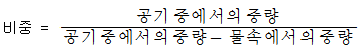
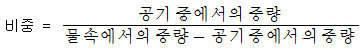
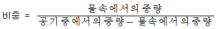
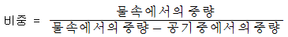
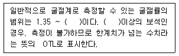

보석감정사(기능사) (2012-02-12 기출문제)
1과목: 보석학일반
1. 다음 중 가장 저렴한 합성보석의 제조방법은 무엇인가?
- 플럭스법
- 초크랄스키법
- 플레임퓨전법
- 수열법
(정답률: 92%)

2. 다음 중 초음파 세척을 피해야 하는 보석은?
- 지르콘
- 가닛
- 사파이어
- 토파즈
(정답률: 76%)
3. 22K라고 각인된 금속반지에 금이 아닌 금속은 얼마나 들어있는가?
- 10.7%
- 8.3%
- 4.4%
- 2.0%
(정답률: 93%)
4. 큐빅 지르코니아와 같이 천연에서는 볼 수 없으며 사람에 의해 만들어져 천연 보석광물의 대용품으로 사용되는 광물들에 대한 통칭은?
- 합성석
- 모조석
- 인조석
- 이미테이션
(정답률: 65%)
5. 합성보석의 제조방법 중 용액으로부터의 결정 성장법에 해당하는 것은?
- 베르누이법
- 수열법
- 스컬용융법
- 초크랄 스키법
(정답률: 60%)
6. 다음 백금족 금속 중 융점과 비중이 가장 낮은 것은?
- 오스뮴
- 팔라듐
- 로듐
- 이리듐
(정답률: 67%)
7. 다음 중 체색이 다른 보석은?
- 로도크로사이트
- 쿤자이트
- 로즈쿼츠
- 히데나이트
(정답률: 61%)
8. 다음 중 방향에 따른 경도의 변화가 가장 현저한 보석은?
- 네프라이트
- 에메랄드
- 석영
- 카이아나이트
(정답률: 57%)
9. 다음 중 보석과 주요 산출국의 연결로 옳지 않은 것은?
- 다이아몬드 - 남아프리카 공화국
- 토파즈 - 브라질
- 에메랄드 - 스리랑카
- 루비 - 태국
(정답률: 82%)
10. 다음 중 결정질 보석에서만 관찰할 수 있는 특성은?
- 벽개
- 경도
- 비중
- 굴절률
(정답률: 88%)
11. 광원에 따라 구성 원소들이 빛을 선택 흡수하여 각기 다른 색을 보이는 특수현상이 나타나는 보석은?
- 수정
- 진주
- 알렉산드라이트
- 토파즈
(정답률: 90%)
12. 암석의 종류와 주 구성광물의 연결로 옳은 것은?
- 화강암 - 석영, 정장석, 사장석, 운모
- 섬록암 - 방해석, 운모
- 감람암 - 사장석
- 석회암 - 정장석
(정답률: 77%)
13. 다음 중 보석의 성채효과에 대한 설명으로 옳은 것은?
- 보석의 내포물에 의해서 빛이 한줄기의 선으로 보이는 현상이다.
- 판상 내포물에서 빛이 반사되어 나타나는 반짝거리는 현상이다.
- 얇은 층으로 이루어진 쌍정 구조에 의한 빛의 간섭에 의해서 생기는 현상이다.
- 미세하게 교차하고 있는 침상 내포물에서 빛이 반사되어 만들어지는 현상이다.
(정답률: 89%)
14. 다이아몬드의 유사석으로 사용되기에 가장 적합하지 않은 것은?
- 합성 큐직 지르코니아
- 스트론튬 티타네이트
- 합성 모이싸나이트
- 몰다바이트
(정답률: 78%)
15. 다음 중 금(Au)에 대한 설명으로 옳지 않은 것은?
- 화학적으로 모든 금속 중 가장 안정된 금속이다.
- 금색광택을 지니며, 색상이 쉽게 변하는 단점이 있다.
- 전연성이 풍부해서 가공성이 우수하다.
- 보통 단독 화학약품에는 용해되지 않으며, 왕수에는 침식된다.
(정답률: 97%)
2과목: 다이아몬드감정법
16. 다음 중 포일백(foilback)이 되어 있고 무색의 납유리로 제조된 다이아몬드 유사석을 뜻하는 용어는?
- 라인스톤
- 골드스톤
- 슬로컴스톤
- 이모리스톤
(정답률: 78%)
17. 조개껍질의 안쪽 벽 모습과 유사한 상태의 단구를 표현하는 용어는?
- 패각상(conchoidal)
- 입상(granular)
- 목쇄상(splintery)
- 클리빙(cleaving)
(정답률: 94%)
18. 안달루사이트에 대한 설명으로 옳지 않은 것은?
- 화학성분은 Al2SiO5이며, 결정계는 사방정계이다.
- 굴절률이 에메랄드와 동일하다.
- 키아스툴라이트라는 변종이 있다.
- 침상내포물이 있을 수 있다.
(정답률: 77%)
19. 평균 중량 범위가 0.70 ~ 0.83ct인 다이아몬드를 분수에 의한 중량 표시로 할 때 옳은 것은?
- 3/4
- 5/8
- 3/8
- 9/10
(정답률: 69%)
20. 목측에 의한 퍼빌리언 깊이의 퍼센트 추정에서 테이블 반사상이 큐릿에서 테이블 코너까지 거리의 1/2에서 2/3사이에서 나타났다면 이 다이아몬드의 퍼빌리언 깊이는?
- 43%
- 44%
- 45%
- 46%
(정답률: 47%)
21. 다이아몬드 컬러 스케일에서 D, E, F 컬러 등급 간의 차이점은 주로 어떤 점에서 차이가 있다고 표현할 수 있는가?
- 투명도
- 분산
- 색도
- 형광성
(정답률: 89%)
22. 일반적인 다이아몬드 테스터는 다이아몬드의 어떤 성질은 이용한 것인가?
- 열팽창율
- 열확장율
- 열전도율
- 열흡수율
(정답률: 94%)
23. 다음 중 작도(Plotting)를 할 때 적색과 녹색을 함께 사용하여야 하는 인클루전으로만 묶인 것은?
- 노트, 캐비티, 인덴티드 내추럴
- 레이저 드릴 홀, 클라우드, 캐비티
- 브루즈, 인덴티드 내추럴, 클리비지
- 클라우드, 인터널 그레이닝, 페더
(정답률: 85%)
24. 다음 중 다이아몬드의 섬광(Scintillation)의 양을 좌우하는 요소가 아닌 것은?
- 패싯의 수
- 패싯 연마의 질
- 패싯의 모양
- 패싯의 각도
(정답률: 53%)
25. 검사하려는 다이아몬드의 컬러가 F 컬러의 마스터스톤보다는 옅고, E 컬러의 마스터스톤보다 짙었다면 이 다이아몬드의 컬러 등급은? (단, GIA 방식에 따른다.)
- C
- D
- E
- F
(정답률: 81%)
26. 다이아몬드의 컬러 등급에 영향을 주는 요인으로 옳지 않은 것은?
- 내포물의 양과 위치
- 다이아몬드의 크기
- 거들 상태
- 굴절률
(정답률: 52%)
27. 마스터 스톤의 조건으로 부적당한 것은? (단, GIA 방식)
- 41 ~ 45% 사이의 퍼빌리언 깊이
- 20 ~ 25% 사이의 크라운 높이
- 0.3 ~ 0.4ct 중량
- 표준 라운드 브릴리언트 컷
(정답률: 93%)
28. 숙련된 등급자가 10배로 확대한 상태에서 다이아몬드를 검사했을 때 인클루전은 없고 작은 블레미시만 보이는 경우 사용되는 클래리티 등급 기호는?
- IF
- VS1
- FL
- VVS2
(정답률: 79%)
29. 다음 중 다이아몬드의 결정 구조로 인해 완전히 내부로 내포된 인클루전에 해당하지 않는 것은?
- 크리스털
- 트위닝 위스프
- 인터널 그레이닝
- 그레인 센터
(정답률: 40%)
30. 다이아몬드의 퍼빌리언에 관한 설명으로 옳지 않은 것은?
- 퍼빌리언 깊이와 퍼빌리언 각도는 서로 정비례의 연관 관계이다. (단, 큐릿이 없을 때)
- 퍼빌리언 패싯의 주요 기능 중에 하나는 다이아몬드 내부로 입사된 빛을 다시 크라운 쪽으로 되돌려 보내는 것이다.
- 퍼빌리언의 깊이가 너무 얕으면 거들이 반사되어 보일수도 있으며 이런 경우 피시 아이라고 한다.
- 퍼빌리언은 다이아몬드 내구성을 유지하는데 매우 중요한 역할을 함으로 깊게 연마하는 것이 바람직하다.
(정답률: 85%)
3과목: 보석감별법
31. 현미경을 사용할 때 빛이 다이아몬드의 측면으로부터 들어오고 어두운 배경과 대비되기 때문에 인클루전을 효율적으로 관찰할 수 있는 조명법은?
- 명시야 조명
- 암시야 조명
- 핀포인트 조명
- 두상광
(정답률: 87%)
32. 블레미시(blemish)에 대한 설명으로 옳지 않은 것은?
- 연마된 다이아몬드 표면에 한정된 특징을 말한다.
- 클래리티 등급을 결정함에 있어서 결정적인 영향을 미친다.
- 연마과정이나 취급방식 또는 착용에 의해 발생한다.
- 거의 중량손실 없이 재연마를 통하여 제거할 수 있다.
(정답률: 88%)
33. 다음 중 다이아몬드의 컬러 등급 구분시 사용되는 기구가 아닌 것은?
- 헤드 루페
- 다이아몬드덕
- 컬러 그레이더
- 펜 라이트
(정답률: 84%)
34. 합성 루비와 천연 루비의 감별 검사 중 합성의 증거가 되는 내포물이 아닌 것은?
- 기포
- 육각형 또는 삼각형의 금속판
- 교차하는 침상
- 커브선
(정답률: 78%)
35. 다음 중 이상 복굴절을 나타내는 영어 약자는?
- ADR
- DR
- AGG
- SR
(정답률: 72%)
36. 자외선 형광성 검사 방법에 대한 설명으로 옳지 않은 것은?
- 형광반응을 명확히 구별하기 위하여 형광반응이 강한 보석과 약한 보석을 함께 검사한다.
- 검사하기 전에 보석을 깨끗이 닦는다.
- 형광기의 램프를 켜고 장파 또는 단파는 일관성을 유지하기 위해 항상 같은 순서로 검사한다.
- 형광기 세트의 윈도우를 통해 보석을 여러 방향에서 관찰하며 자외선이 눈으로 들어오지 않고, 보석에 비추도록 해야 한다.
(정답률: 85%)
37. 분광기의 검사방법 중 내부 반사법에 대한 설명으로 옳지 않은 것은?
- 빛이 보석의 내부표면에 반사되도록 하여 관찰하는 방법이다.
- 반사광의 방향으로 분광기를 향한다.
- 보석의 테이블을 아래로 향하게 하여 조리개 위에 놓는다.
- 비교적 큰 불투명 보석에 적합한 방법이다.
(정답률: 80%)
38. 다음 중 레드링(Red-Ring) 검사로 알아낼 수 있는 보석은?
- 포일백 유리
- 가닛과 유리의 더블릿
- 에메랄드 트리플릿
- 루비와 합성루비의 더블릿
(정답률: 89%)
39. 정수법에 의해 보석의 비중을 측정하려 한다. 다음 중 비중을 계산하기 위한 공식으로 옳은 것은?




(정답률: 94%)
40. 다음 중 색상과 이에 대한 영어 약자의 연결로 옳지 않은 것은?
- 무색 : C
- 갈색 : Br
- 회색 : Gr
- 검정색 : B
(정답률: 82%)
41. 메틸렌 아이오다이드 용액에 미지의 보석을 침적시켰을 때 보석이 거의 보이지 않았다면 이 보석의 굴절률은 어디에 가깝겠는가?
- 1.74
- 1.54
- 1.63
- 2.42
(정답률: 51%)
42. 다음 중 염산에 발포반응을 보이지 않는 보석은?
- 산호
- 로도크로사이트
- 칼사이트
- 사파이어
(정답률: 79%)
43. 보석에 빛을 투과시킬 경우에 보석의 가장자리의 얇은 부분을 통해서만 빛이 투과하는 경우 보석의 투명도는?
- 아투명
- 반투명
- 아반투명
- 불투명
(정답률: 70%)
44. 다음 중 3.32 비중액에 넣었을 때 뜨는 보석은?
- 칼세도니
- 스피넬
- 합성루비
- 합성 큐빅 지르코니아
(정답률: 57%)
45. 자외선에 의한 다이아몬드의 형광성 검사시 가장 일반적인 다이아몬드의 형광색은?
- 청색
- 회색
- 적색
- 갈색
(정답률: 95%)
4과목: 보석가공기법
46. 확대 검사 시 썬스팽글, 기포, 곤충과 식물 등을 관찰할 수 있으며 포화염수에 뜨는 보석은?
- 엠버
- 산호
- 제트
- 플라스틱
(정답률: 93%)
47. 자외선 형광성 검사시 형광반응이 나타나지 않는 보석은?
- 루비
- 엠버
- 알만다이트 가닛
- 진주
(정답률: 61%)
48. 다음 중 분광기의 검사방법이 아닌 것은?
- 투과법
- 흡수법
- 내부 반사법
- 외부 반사법
(정답률: 96%)
49. 다음 중 매우 강한 다색성을 가진 삼색성 보석에 해당하는 것은?
- 자수정
- 안달루사이트
- 제이다이트
- 터쿼이즈
(정답률: 90%)
50. 다음 중 보석에 대한 편광성 검사로 알 수 있는 것은?
- 광학 특성
- 특수 효과
- 비중
- 굴절률
(정답률: 69%)
51. 다음 중 ( )안에 공통으로 들어갈 수치는?

- 1.50
- 1.65
- 1.78
- 1.81
(정답률: 88%)
52. 다음 중 패시팅(Faceting) 연마에 적합한 보석은?
- 스타사파이어
- 제이다이트
- 캐츠아이
- 다이아몬드
(정답률: 83%)
53. 모든 면이 거들 가장자리와 평행한 사각형이며, 에메랄드 컷이라고도 하는 연마형태는?
- 브릴리언트 컷
- 스텝 컷
- 혼합 컷
- 마퀴즈 컷
(정답률: 92%)
54. 거들 위의 표면 부분을 커팅해서 조각하기 때문에 전체의 디자인이 거들 가장자리보다 위에 위치하는 조각 보석은?
- 인탈리오(intaglio)
- 카메오(cameo)
- 셰비(chevee)
- 큐벳(cuvette)
(정답률: 82%)
55. 텀블링 연마의 광택제로 적합하지 않은 것은?
- 트리폴리
- 크롬 옥사이드
- 틴 옥사이드
- 카보런덤
(정답률: 60%)
56. 32, 64, 96, 120 인덱스 기어로 연마할 수 없는 것은?
- 3각형
- 4각형
- 8각형
- 16각형
(정답률: 66%)
57. 목걸이의 명칭별 분류 중 전체의 형태가 하나로 고정되어 있는 목걸이로, 의상과의 관계에서는 털목도리를 의미하는 것은?
- 네크피스
- 네크리트
- 네크리스
- 로키트
(정답률: 81%)
58. 표준 라운드 브릴리언트형의 크라운면 연마의 순서로 옳은 것은?
- 테이블면 - 스타면 - 메인면 - 상부 거들면
- 테이블면 - 메인면 - 상부 거들면 - 스타면
- 테이블면 - 메인면 - 스타면 - 상부 거들면
- 테이블면 - 상부 거들면 - 메인면 - 스타면
(정답률: 58%)
59. 다음 중 순금의 지환반지를 광내는데 가장 효율적인 공구는?
- 갈기
- 광쇠
- 핸드 바이스
- 샌드 페이퍼
(정답률: 97%)
60. 원형 구슬의 천공작업 시 구슬지름의 60% 정도를 천공한 후 되돌려 나머지를 천공하는 이유는?
- 드릴의 길이가 짧기 때문에
- 구슬이 원형을 이루고 있기 때문에
- 드릴의 회전속도가 크기 때문에
- 구슬의 끝부분이 깨어지기 쉽기 때문에
(정답률: 86%)